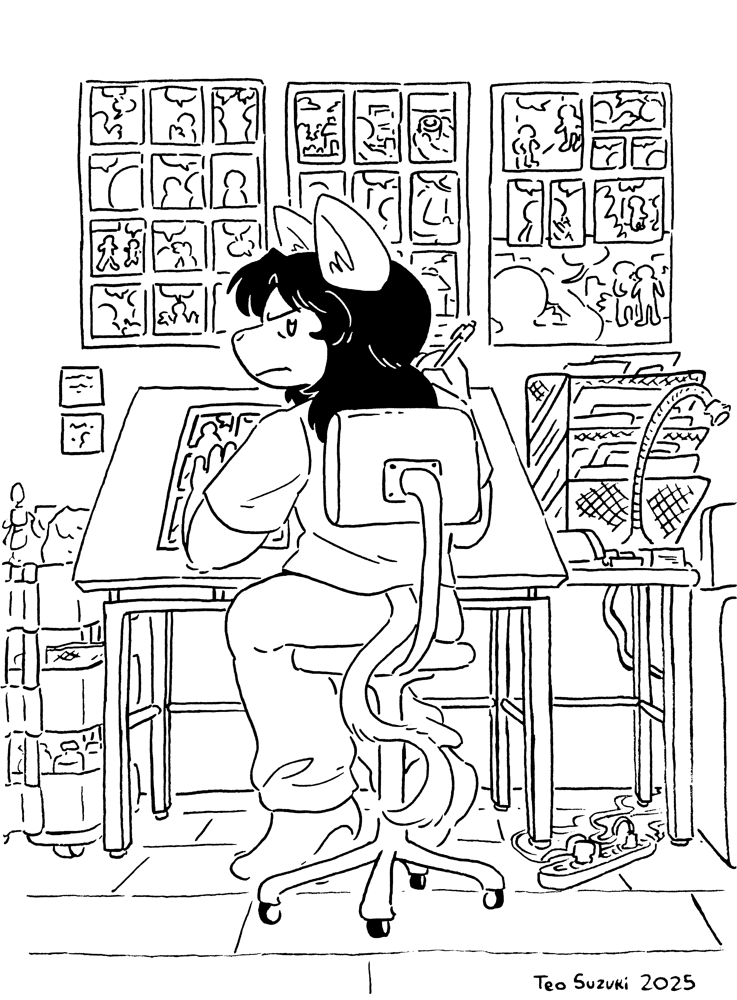

Teo Suzuki was born in Cambridge, Massachusetts and raised in Montclair, New Jersey. He graduated from the School of Visual Arts with a BFA in Comics,
and currently lives in Washington Heights. Suzuki is the co-founder of the independent comics collective Epic Wayne Press,
and has represented the group at shows, festivals, and expositions across the United States and Canada. While also an illustrator, Suzuki primarily considers himself a cartoonist,
consistently self-publishing mini-comics every year. His work unapologetically operates under the “furry” subgenre, while taking influence from classic alternative comics in hopes
of creating original, daring graphic storytelling.